Recycled Earth
When Mumbai changed how it collected its rubbish, the ragpickers who sorted it lost their work. Recycled Earth gave it back, with an app to run every pickup.
- Roles
- UX and UI design, Branding and Identity
- Platform
- Android
- @therecycledearth
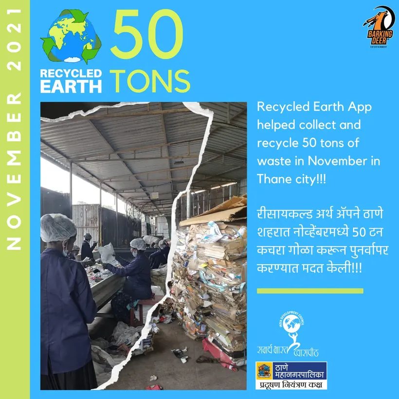
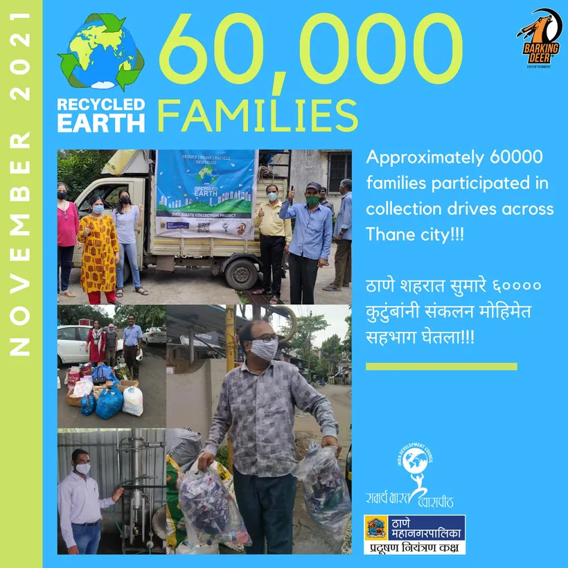
The challenge
Mumbai's residents throw unsorted waste, plastics included, into public bins. Ragpickers used to collect, sort and sell the recyclables from those bins.
Changes to municipal collection were costing ragpickers their livelihoods and leaving waste unsorted. Trucks carried it straight to low-lying landfills, where it polluted the ground and created health risks.

The solution
A poly-fuel processing facility in Thane, fed by collection trucks gathering unsorted waste.
The same ragpickers, now employed in a safe, sanitary space to separate plastic from organic waste.
Plastic turned into poly fuel; organic waste composted into a garden and community space at the facility.
The Recycled Earth app to monitor every pickup and every stage of processing.
My role
- Co-owned product vision and delivery for a platform with many stakeholders
- Designed progress and contribution systems, borrowed from games, to encourage participation and accountability
- Delivered GPS tracking, scheduling and impact dashboards across the resident, driver and admin apps
- Designed the Recycled Earth brand and identity
How a route runs
- 01On pickup day, trucks leave the facility on their set routes.
- 02Building societies and residents get pickup notifications and a live ETA.
- 03Waste is collected from designated points.
- 04Waste reaches the sorting facility, ready to be separated.
Three users, three versions of the app
Residents
People living in building societies registered with Recycled Earth. They see pickup schedules, track the truck down to the minute, and read waste and recycling tips.
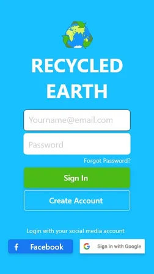
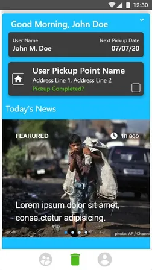
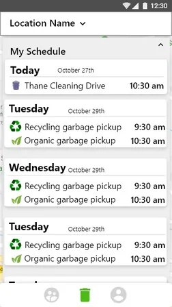
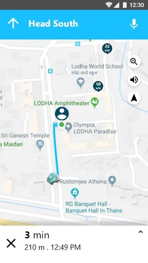
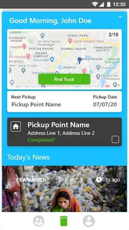
Pickup drivers
The most minimal version of the app. Drivers see their route and every pickup on it. GPS units on trucks gifted by the municipality make live tracking possible.
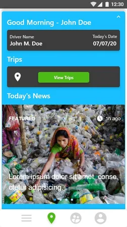
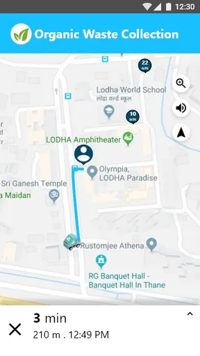
Admins
Admins add routes and pickup points, track every truck across routes, and manage the housing societies on each route.
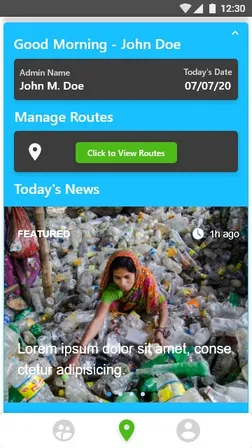
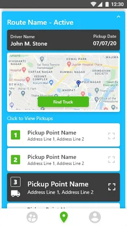
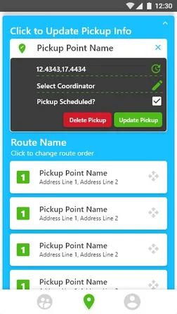
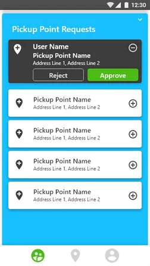
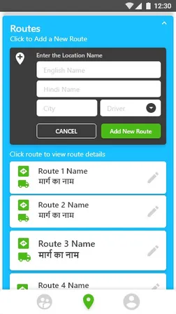
Acclaim
Featured as a best-practice success story in UNICEF's WASH-Action4Change newsletter, March 2022.
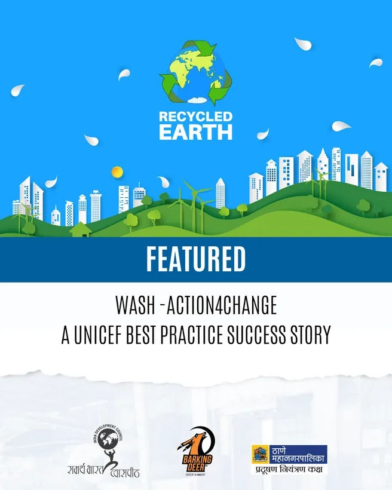
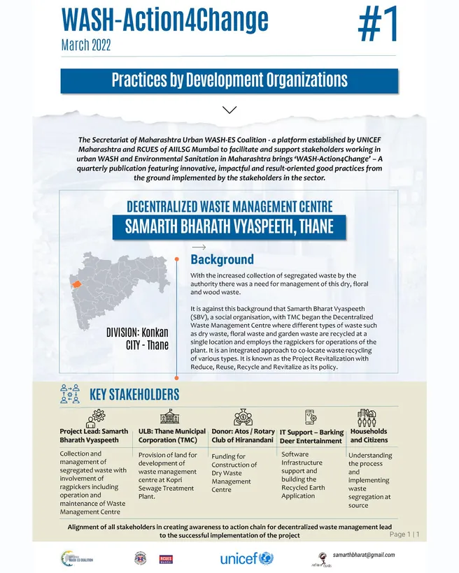
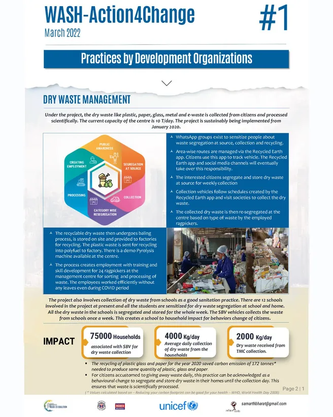
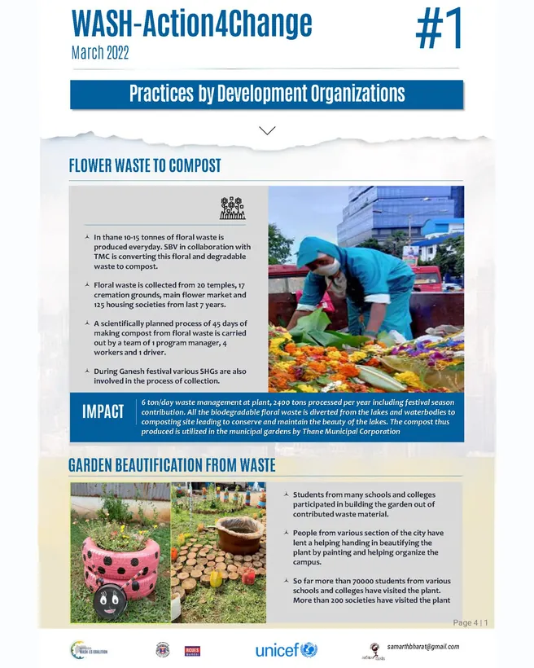
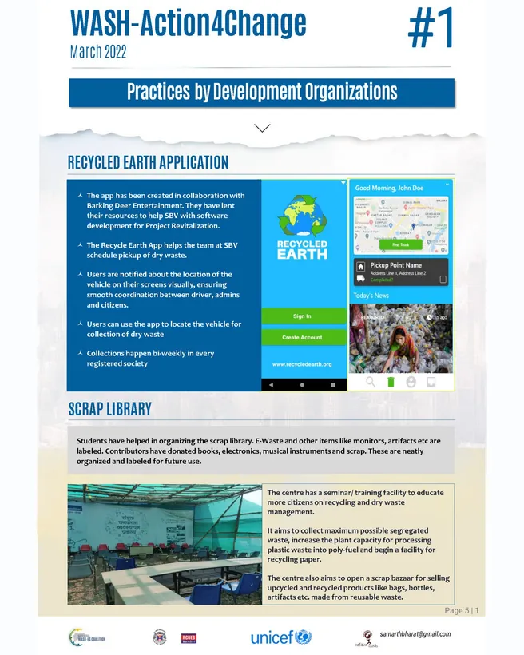
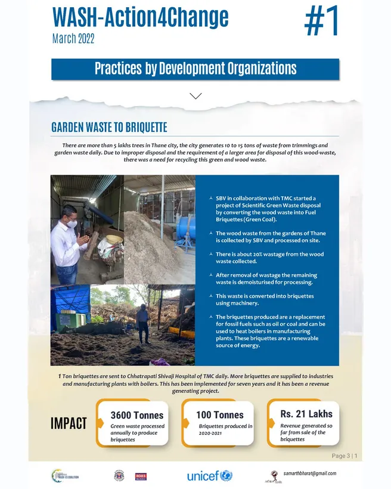